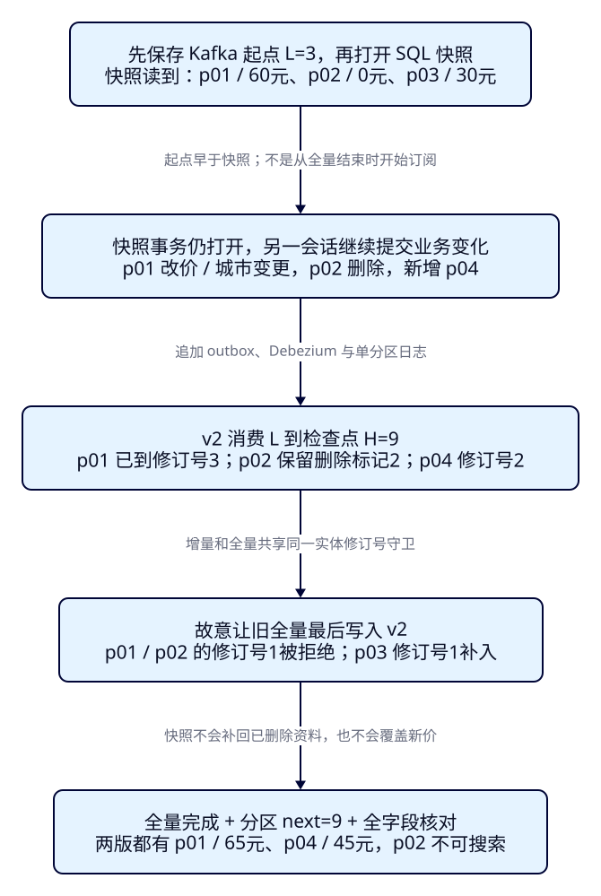
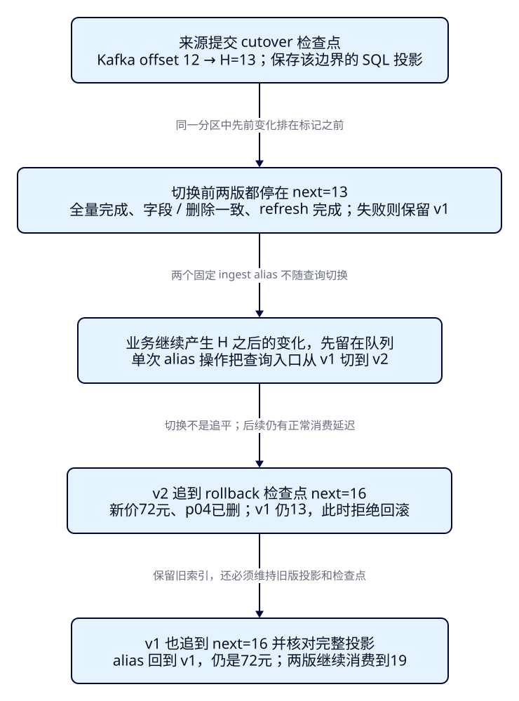

网站持续改价时，
索引重建怎样追平再切换？
运营要为景点卡片增加“50元以下”的价格档位，商家却不能等重建完才改价、下架。复制出来的新索引可能仍显示60元，已经删除的步道又出现了。F33在受控暂停写入时完成重建；这一课让业务在全量读取期间继续提交变化，用同一日志补齐新索引，再证明某个明确边界已经可以切换，且回滚不丢掉切换后的新价。
学完能用输出证明什么
- 在真实SQL快照仍打开时改价、删除和新增；证明增量起点早于快照，晚到的旧全量不会覆盖新状态。
- 分别查看两版投影的消费位置、字段和删除标记；目标落后或真实写入失败时拒绝切换，恢复后重新验收。
- 在业务继续更新时切换同一个查询alias；让旧版追上切换后的变化再回滚，核对同一Java进程仍返回新价。
本课目录
图解跳转：01 · 全量与增量的交叠 · 02 · 追平、切换与回滚
1. 新索引建好了，游客为什么还看到旧价？
Elasticsearch保存旅游搜索的派生文档，业务事实仍在PostgreSQL；Java把城市、景点和标签组装成搜索投影。重建是按新字段设计重新生成这份投影，不会自动暂停数据库，也不会自动订阅重建之后的变化。查询alias只提供稳定的索引入口，不能判断资料是否完整。
先用一次_reindex复制初始三份文档，再在数据库把游船改为65元、删除步道、新增夜游景点。实时旧索引经过CDC会变化，复制目标仍是游船60元、步道0元、没有夜游。本课会真实重现它。即使复制目标与旧索引都恰好三条，也可能是一删一增、价格和标签全错；计数相等不能证明可以切换。
F33明确暂停写入，在稳定源上重建、核对、切换；本课的全量期间业务保持可写。我们保存可重放的增量起点，用完整快照和版本守卫合并变化，再把两个消费者限定在同一个检查点上核对。普通复制默认覆盖同ID，不会理解_source中的业务修订号。不能把F40的高版本文档先写入，再让普通reindex覆盖回来。Reindex版本行为与本课反例相互印证。
观察窗继续用F07的西湖/HZ/200元/3km搜索，实际路径是浏览器→本机Java→ES。只切查询alias，同一个Java进程不换索引配置也不重启。Pages只提供教程；“价格档位”用REST核对新字段，没有新增前端或门户开发。
2. 两版文档，必须能从同一个事实重新生成
v001仍保留原景点字段；v002新增price_band：0分为free，1–4999分为under_50，5000分及以上为from_50，币种固定CNY，都是整数分。两版都有projection_schema、sync_revision、sync_deleted和指纹。p01修订号3在v1和v2表达同一份来源事实，但字段布局不同；本课在各自独立索引中比较版本，不把两版指纹混用。
沿用F40的来源协议：所有示例写入者先取共同事务锁41041，再修改业务、递增每个受影响景点的clock，并在同一事务把完整投影追加到outbox。城市变化要发布所有受影响景点。clock在物理删除之后仍保留，删除投影只有ID、修订号和标记；重新开放沿原clock递增。这里统一为一张追加表、一个topic、一个分区，Debezium一个task按流送入Java；没有用跨topic offset排序。
v1和v2消费者各有自己的组及提交位置，分别写固定的tut-f41-v1-ingest与tut-f41-v2-ingest；这两个write alias不跟随查询切换。运营修改始终先写SQL，不直接写ES。查询alias从v1切v2不会产生“双写”，也不会为落后版本补课；继续运行两版消费者才维护回滚能力。
这是本课的合作写入协议，不会透明约束任意既有应用。绕过锁、漏发关联ID、清掉clock或投影依赖了旧事件未包含的新字段，都需要先修复来源设计。本课价格档位只由原事件已有的价格计算，因此可以完整重放。新业务字段缺历史来源时，应重新定义一致的快照与事件契约。
3. 为什么增量起点要在全量之前？
设Kafka末端为L=3，它表示下一条可能出现的分区位置。先保存L，再打开SQL的Repeatable Read事务并执行一次查询，固定这次全量视图。随后别的会话即使提交了改价，全量仍读到初始三份资料。PostgreSQL的视图在第一条非事务控制语句时建立，不能只发一个BEGIN就声称已经拍好快照。见PG17事务隔离说明。
L不是数据库LSN，也不是“DB已经同步到这里”的证明。某笔在快照之前提交的SQL变化可能尚未被Debezium送到Kafka；只要从L开始保留并消费，这条晚来的事件仍会被读到。它若已包含在快照中，重复合并返回noop；若发生在快照之后，增量负责更新。重叠可以靠版本去重，缺口无法靠版本自动修复。若等全量结束才取Kafka末端，期间的删除和改价就可能被直接越过。
全量与增量共享同一套写入守卫：低修订号noop，同版同指纹noop，同版异载荷停止，高版本清空后完整替换。快照里p02仍在，但增量已把它写成删除标记2，晚到的快照1不能复活它。全量从clock集合导出，已删除实体也导出标记，避免重建时丢掉历史保护。源outbox、Kafka保留区间、clock和目标标记必须覆盖此次重放；保留不足要重新建立重建代次，不能静默从earliest继续。

4. 准备独立资源，先预测三份初始资料
p01西湖游船6000分/HZ、p02西湖步道0分/HZ、p03西湖园林3000分/SZ，修订号均1。t01为p01夜游，t02为p02亲水。HZ初名杭州，后改杭州城区。v1/v2索引均为1主0副、strict mapping、价格long且coerce=false、refresh_interval=-1；所有搜索核对前显式refresh。
沿用锁定制品：ES9.4.0/Lucene10.4.0，PG17.5、Kafka broker4.0.1、Debezium3.3.1.Final（内含Connect4.1.0），应用Boot4.0.8/JDK25.0.4.1+1、官方ES Java与Rest5 Client9.4.8、Kafka客户端4.0.1。ES镜像内JVM另行核对。独立Compose项目es-framework-f41，PG15441/Kafka29341/Connect18341/ES20541/观察窗18091；不碰9200/9201或前课资源。
cd projects/travel-search
python3 labs/f41/lab.py init --out /tmp/f41-init
python3 labs/f41/lab.py start --out /tmp/f41-start
cd backend
./mvnw -B -ntp clean package dependency:build-classpath -Dmdep.outputFile=target/f41-classpath.txt
cd ..
backend/mvnw -B -ntp -f labs/f41/pom.xml dependency:build-classpath -Dmdep.outputFile=target/projection-classpath.txt等start返回成功再运行案例。init生成被忽略的.local随机密码文件（目录0700/文件0600），已有目录或卷时拒绝覆盖；原卷重启只用start。CDC只读outbox及复制日志，密码由Connect文件提供器读取，不进入浏览器或提交文件。本机合成环境的ES无认证、Kafka/Connect明文；部署安全用F35的方案。topic单副本、delete保留7天不是可靠性或任意长重放保证。
完整SQL、mapping、连接器与两版写入入口
-- psql binds cdc_password through stdin; no credentials in this file.
CREATE SCHEMA f41;
CREATE TABLE f41.city (city_code text PRIMARY KEY, city_name text NOT NULL);
CREATE TABLE f41.attraction (
attraction_id text PRIMARY KEY CHECK (attraction_id ~ '^p[0-9]{2}$'),
name text NOT NULL, city_code text NOT NULL REFERENCES f41.city,
ticket_price_fen bigint NOT NULL CHECK (ticket_price_fen >= 0),
status text NOT NULL CHECK (status IN ('open','closed')),
latitude double precision NOT NULL, longitude double precision NOT NULL
);
CREATE TABLE f41.attraction_tag (
tag_id text PRIMARY KEY, attraction_id text NOT NULL REFERENCES f41.attraction ON DELETE CASCADE,
tag text NOT NULL, UNIQUE(attraction_id,tag)
);
-- Preserve clocks for closed/deleted roots, including during full export.
CREATE TABLE f41.projection_clock (attraction_id text PRIMARY KEY, revision bigint NOT NULL CHECK (revision > 0));
CREATE TABLE f41.projection_event (
event_id bigint GENERATED ALWAYS AS IDENTITY PRIMARY KEY,
kind text NOT NULL CHECK (kind IN ('document','fence')),
attraction_id text, revision bigint, document jsonb, fence_key text UNIQUE,
CHECK ((kind='document' AND attraction_id IS NOT NULL AND revision > 0 AND document IS NOT NULL AND fence_key IS NULL)
OR (kind='fence' AND attraction_id IS NULL AND revision IS NULL AND document IS NULL AND fence_key IS NOT NULL))
);
CREATE FUNCTION f41.project(p_id text) RETURNS jsonb LANGUAGE sql STABLE AS $$
SELECT jsonb_build_object(
'attraction_id',a.attraction_id,'name',a.name,'city_code',a.city_code,'city_name',c.city_name,
'ticket_price_fen',a.ticket_price_fen,'currency','CNY','status',a.status,
'location',jsonb_build_object('lat',a.latitude,'lon',a.longitude),
'tags',COALESCE((SELECT jsonb_agg(t.tag ORDER BY t.tag COLLATE "C")
FROM f41.attraction_tag t WHERE t.attraction_id=a.attraction_id),'[]'::jsonb))
FROM f41.attraction a JOIN f41.city c USING(city_code)
WHERE a.attraction_id=p_id AND a.status='open'
$$;
CREATE FUNCTION f41.envelope(p_id text) RETURNS jsonb LANGUAGE sql STABLE AS $$
SELECT COALESCE(f41.project(p_id),jsonb_build_object('attraction_id',p_id))
|| jsonb_build_object('sync_revision',revision,'sync_deleted',f41.project(p_id) IS NULL)
FROM f41.projection_clock WHERE attraction_id=p_id
$$;
-- Every writer takes lock 41041 BEFORE changing business rows. No trigger
-- enforces this for arbitrary writers. Emit ALL affected roots in the same tx.
CREATE FUNCTION f41.emit(p_id text) RETURNS bigint LANGUAGE plpgsql AS $$
DECLARE v bigint;
BEGIN
INSERT INTO f41.projection_clock VALUES(p_id,1)
ON CONFLICT(attraction_id) DO UPDATE SET revision=f41.projection_clock.revision+1
RETURNING revision INTO v;
INSERT INTO f41.projection_event(kind,attraction_id,revision,document)
VALUES('document',p_id,v,f41.envelope(p_id));
RETURN v;
END $$;
INSERT INTO f41.city VALUES('HZ','杭州'),('SZ','苏州');
INSERT INTO f41.attraction VALUES
('p01','西湖 游船','HZ',6000,'open',30.250,120.150),
('p02','西湖 步道','HZ',0,'open',30.251,120.151),
('p03','西湖 园林','SZ',3000,'open',31.320,120.620);
INSERT INTO f41.attraction_tag VALUES('t01','p01','夜游'),('t02','p02','亲水');
SELECT f41.emit('p01'),f41.emit('p02'),f41.emit('p03');
CREATE ROLE f41_cdc LOGIN REPLICATION PASSWORD :'cdc_password';
GRANT CONNECT ON DATABASE travel_f41 TO f41_cdc;
GRANT USAGE ON SCHEMA f41 TO f41_cdc;
GRANT SELECT ON f41.projection_event TO f41_cdc;
CREATE PUBLICATION f41_publication FOR TABLE f41.projection_event;{
"settings": {
"number_of_shards": 1,
"number_of_replicas": 0,
"refresh_interval": "-1"
},
"mappings": {
"dynamic": "strict",
"properties": {
"attraction_id": {
"type": "keyword"
},
"name": {
"type": "text",
"analyzer": "whitespace"
},
"city_code": {
"type": "keyword"
},
"city_name": {
"type": "keyword"
},
"ticket_price_fen": {
"type": "long",
"coerce": false
},
"currency": {
"type": "keyword"
},
"status": {
"type": "keyword"
},
"location": {
"type": "geo_point"
},
"tags": {
"type": "keyword"
},
"sync_revision": {
"type": "long"
},
"sync_deleted": {
"type": "boolean"
},
"sync_hash": {
"type": "keyword"
},
"projection_schema": {
"type": "integer"
},
"price_band": {
"type": "keyword"
}
}
}
}{
"actions": [
{"add": {"index": "tut-f41-attractions-v001", "alias": "tut-f41-v1-ingest", "is_write_index": true}},
{"add": {"index": "tut-f41-attractions-v002", "alias": "tut-f41-v2-ingest", "is_write_index": true}},
{"add": {"index": "tut-f41-attractions-v001", "alias": "tut-f41-attractions-read", "filter": {"term": {"sync_deleted": false}}}}
]
}完整配置：Compose、Debezium、v1 mapping、Java入口。连接器initial快照先得到3条r，其后业务变化和检查点是追加c事件；不删除outbox。
5. f41-c01：让旧全量故意最后写入
自动案例会先真实复制一次旧索引作为反例。然后保存L=3、建立独立SQL快照会话；另一个会话执行下列完整事务。这里不依靠读者手速：快照会话保持打开，改价事务提交之后才导出全量。
BEGIN;
SELECT pg_advisory_xact_lock(41041);
UPDATE f41.attraction SET ticket_price_fen=6500 WHERE attraction_id='p01';
SELECT f41.emit('p01'); -- revision 2
DELETE FROM f41.attraction WHERE attraction_id='p02';
SELECT f41.emit('p02'); -- revision 2, retained deletion marker
INSERT INTO f41.attraction VALUES('p04','西湖 夜游','HZ',4500,'open',30.252,120.152);
SELECT f41.emit('p04'); -- revision 1
UPDATE f41.city SET city_name='杭州城区' WHERE city_code='HZ';
SELECT f41.emit(attraction_id) FROM f41.attraction WHERE city_code='HZ' ORDER BY attraction_id;
-- p01 revision 3; p04 revision 2, both complete projections.
COMMIT;数据库当前已是p01=6500分/修订号3、p02删除标记2、p04=4500分/修订号2；p03没变。快照导出的三份资料仍是p01/6000、p02/0、p03/3000，修订号均1。实验把v2从L=3消费到第一个检查点H=9，再加载旧全量：p01与p02返回noop，p03创建，p04保留。旧全量重放不会把游船改回60元，也不会复活步道。
python3 labs/f41/lab.py prepare --out /tmp/f41-prepare
python3 labs/f41/lab.py snapshot --out /tmp/f41-snapshot
python3 labs/f41/lab.py fence backfill --out /tmp/f41-fence-backfill
python3 labs/f41/lab.py drain backfill:v1 --out /tmp/f41-delta-v1
python3 labs/f41/lab.py drain backfill:v2 --out /tmp/f41-delta-v2
python3 labs/f41/lab.py load --out /tmp/f41-load
python3 labs/f41/lab.py gate backfill --out /tmp/f41-backfill-checkload之前即使v2 next=9也拒绝切换，因为它还没有从未改变过的p03。load之后核对4份原始文档（含p02标记）、3份可搜索文档，HZ观察窗只命中p01/65元、p04/45元。p03在SZ，用原始字段核对；不要把观察窗两张卡片误当全索引计数。反例索引仍含p02、缺p04、p01仍60元，说明一次复制结束不等于持续追平。
6. 两版Java共用事实，分别生成字段和提交位置
下面是完整投影逻辑。snapshot与CDC都传入同一个SQL JSONB文本；先校验ID、修订号与删除标记，再按目标版本生成字段。指纹含投影版本和原始规范文本，同一代次的快照/增量必须一致；不能读到当前新资料后冒充旧修订号。价格档位是每次完整重算，删除时不会残留旧price_band、name或tags。
static Document project(String raw,String version) throws Exception {
ObjectNode doc=(ObjectNode)JSON.readTree(raw);
String id=doc.path("attraction_id").asString("");
long revision=doc.path("sync_revision").asLong(-1);
check(id.matches("p[0-9]{2}") && revision>0 && doc.path("sync_deleted").isBoolean(),"Invalid canonical projection");
check(!doc.has("sync_hash") && !doc.has("projection_schema") && !doc.has("price_band"),"Require canonical source fields");
int schema=version.equals("v1")?1:2;
if(schema==2 && !doc.path("sync_deleted").asBoolean()) {
check(doc.path("ticket_price_fen").isIntegralNumber(),"Price must be integer fen");
long price=doc.path("ticket_price_fen").asLong();check(price>=0,"Negative price");
doc.put("price_band",price==0?"free":price<5000?"under_50":"from_50");
}
doc.put("projection_schema",schema);
// Same SQL JSONB text for the full snapshot and immutable outbox.
// Projection schema is part of the fingerprint; never share a guard
// state between v1 and v2, or relabel an old payload with a new revision.
String hash=HexFormat.of().formatHex(MessageDigest.getInstance("SHA-256")
.digest((schema+"\n"+raw).getBytes(StandardCharsets.UTF_8)));
doc.put("sync_hash",hash);
return new Document(id,revision,JsonData.fromJson(JSON.writeValueAsString(doc)));
}ES端仍用原子更新脚本比较来源版本；F41每版都写固定write alias，require_alias=true。普通部分字段update和增量价格加法不能替代完整替换。脚本如下，缺省新文档用scripted_upsert和空upsert，由脚本完整填入。
if (ctx._source.containsKey('sync_revision')) {
if (params.revision < ctx._source.sync_revision) {
ctx.op = 'noop';
return;
}
if (params.revision == ctx._source.sync_revision) {
if (ctx._source.sync_hash != params.document.sync_hash) {
throw new IllegalArgumentException('same revision with different payload');
}
ctx.op = 'noop';
return;
}
}
ctx._source.clear();
ctx._source.putAll(params.document); static void apply(ElasticsearchClient es,String version,List<Document> documents) throws Exception {
if(documents.isEmpty())return;
var bulk=new BulkRequest.Builder().requireAlias(true);
for(var doc:documents) bulk.operations(o->o.update(u->u.index(writer(version)).id(doc.id()).retryOnConflict(3)
.action(a->a.script(s->s.lang("painless").source(v->v.scriptString(SCRIPT))
.params("revision",JsonData.of(doc.revision())).params("document",doc.body()))
.scriptedUpsert(true).upsert(JsonData.fromJson("{}")))));
var response=es.bulk(bulk.build());check(response.items().size()==documents.size(),"Bulk item count mismatch");
var failures=new ArrayList<String>();
for(int i=0;i<documents.size();i++) {
var doc=documents.get(i);var item=response.items().get(i);
check(doc.id().equals(item.id()),"Bulk ID mismatch");
log(Map.of("kind","item","target",version,"index",item.index(),"id",doc.id(),"revision",doc.revision(),
"status",item.status(),"result",item.result()==null?"":item.result(),"error",item.error()==null?"":item.error().toString()));
if(item.error()!=null || item.status()>=300) failures.add(doc.id()+":"+item.status());
}
// No DLQ waiver in a rebuild gate. Recovery replays uncommitted work
// through the same guard; F40's transient retry policy can be added.
check(failures.isEmpty(),"Unresolved target items; no checkpoint commit: "+failures);
}任何未解决item都会停止本次drain，不提交位置。F40已经讲过有限重试/DLQ；本课切换验收不允许用“已隔离”豁免缺失资料。目标恢复后重放未提交批次，已成功项靠版本noop。两消费者组的提交独立，不能用v1的位置替v2盖章。
完整分区消费、边界过滤与提交代码
static void drain(ElasticsearchClient es,String version,long high) throws Exception {
try(var c=new KafkaConsumer<String,String>(properties(version))) {
c.subscribe(List.of(TOPIC));long deadline=System.nanoTime()+Duration.ofSeconds(80).toNanos();
while(c.assignment().isEmpty()) { c.poll(Duration.ofMillis(200));check(System.nanoTime()<deadline,"Consumer join timed out"); }
check(c.assignment().equals(Set.of(TP)),"Only one worker per target, one partition required");
var offset=c.committed(Set.of(TP)).get(TP);check(offset!=null,"Explicit target seed required");
long next=offset.offset(),begin=c.beginningOffsets(List.of(TP)).get(TP),end=c.endOffsets(List.of(TP)).get(TP);
check(next>=begin && next<=high && high<=end,"Checkpoint outside retained source or requested fence");c.seek(TP,next);
long processed=0;
while(next<high) {
var records=c.poll(Duration.ofMillis(200)).records(TP).stream().filter(r->r.offset()<high).toList();
if(!records.isEmpty()) {
var documents=new ArrayList<Document>();
for(var r:records) {
var after=envelope(r);
if(after.path("kind").asString().equals("fence")) {
check(!after.path("fence_key").asString("").isBlank(),"Missing fence key");
log(Map.of("kind","fence","key",after.path("fence_key").asString(),"offset",r.offset()));
} else {
var doc=project(after.path("document").asString(),version);
check(doc.id().equals(after.path("attraction_id").asString()) && doc.revision()==after.path("revision").asLong(),"Source revision mismatch");
documents.add(doc);
}
}
apply(es,version,documents);
var last=records.getLast();next=last.offset()+1;
c.commitSync(Map.of(TP,new OffsetAndMetadata(next,last.leaderEpoch(),"f41-applied-through-fence")));
log(Map.of("kind","commit","target",version,"next",next));processed+=records.size();
}
check(System.nanoTime()<deadline,"Bounded drain timed out");
}
log(Map.of("kind","drained","target",version,"next",next,"high",high,"processed",processed));
}
}完整类见F41Worker.java。命令按串行worker模型运行，文件锁阻止本机消费者、快照写入和alias协调互相穿插；没有实现分布式协调或自动rebalance接管。
7. f41-c02：Kafka末端和“来源检查点”不同
检查点是明确说明“已处理到哪里”的凭据。本课业务仍可写，要核对一个可重复解释的边界：在与业务相同的锁协议下追加一条fence标记，同时保存该时刻所有clock的规范投影。锁只保护这次短事务，不覆盖全量导出、消费或切换；提交后下一笔业务即可继续。单个topic/partition、顺序追加和单task的前提，使先前业务事件排在该标记之前。
-- Bind fence_key through psql stdin. Same lock as EVERY cooperating writer.
BEGIN;
SELECT pg_advisory_xact_lock(41041);
INSERT INTO f41.projection_event(kind,fence_key) VALUES('fence',:'fence_key');
SELECT jsonb_build_object('fence_key',:'fence_key','documents',
(SELECT jsonb_agg(f41.envelope(attraction_id)::text ORDER BY attraction_id)
FROM f41.projection_clock));
COMMIT;等Debezium真正把fence送到Kafka，再读其offset。cutover标记实际在offset12，H=13意味着已处理offset<13，next=13。仅调用endOffsets得到13，不能证明尚在连接器里的DB变化也到了；这里必须看到来源标记。同理，poll读到的位置也不是已成功写入的位置，必须核对commit结果。Kafka的position与committed position含义不同。
在新一轮变化中，p01改70元/修订号4，p03下架为标记2，p04加夜景标签/修订号3。先让v1到13、v2仍9，切换被拒绝；然后对v2设置真实index.blocks.write=true，Bulk返回403，v2 next仍9，再次拒绝。解除block、重放到13，才重新核对。不是把故障异常捕获后继续提交，也不是把集群green当作完成证据。
python3 labs/f41/lab.py step backlog --out /tmp/f41-backlog
python3 labs/f41/lab.py fence cutover --out /tmp/f41-fence-cutover
python3 labs/f41/lab.py drain cutover:v1 --out /tmp/f41-live-13
python3 labs/f41/lab.py gate cutover --out /tmp/f41-reject-lag
curl --fail-with-body -sS -X PUT http://127.0.0.1:20541/tut-f41-attractions-v002/_settings -H 'Content-Type: application/json' -d '{"index.blocks.write":true}'
python3 labs/f41/lab.py drain cutover:v2 --out /tmp/f41-blocked
curl --fail-with-body -sS -X PUT http://127.0.0.1:20541/tut-f41-attractions-v002/_settings -H 'Content-Type: application/json' -d '{"index.blocks.write":false}'
python3 labs/f41/lab.py drain cutover:v2 --out /tmp/f41-resume本机重建记录保存代次、Kafka集群/Topic ID、L、SQL快照文件哈希及完成标记、两索引UUID、各fence投影和当前alias目标。Kafka组提交保存实际增量进度。协调器验证来源身份、L仍被保留、目标未重建、全量完成、两组恰好都到H；随后refresh并逐ID比较完整字段、标记、修订号和指纹，最后核对alias。单个检查失败就保留原查询目标。这里精确停在H，是为了用同一份固定投影核对；不能把“任意大于H”与旧对照样本混用。
def gate(self,key,save=True):
job=read_job();position=self.positions();fence=job['fences'][key];high=fence['high']
check(job['source']['topic_id']==position['topic_id'] and job['source']['kafka_cluster_id']==position['kafka_cluster_id'],'Source topic/cluster identity changed')
check(position['begin']<=job['low'],'Low watermark no longer retained; rebuild needs a new generation')
check(self.req('GET','/')['cluster_uuid']==job['es_cluster_uuid'],'ES cluster changed')
for v,index in INDEX.items():check(self.req('GET','/'+index+'/_settings')[index]['settings']['index']['uuid']==job['index_uuids'][v],'Target index was recreated')
check(job['snapshot_complete'] and sha(ROOT/job['snapshot_path'])==job['snapshot_sha256'],'Full snapshot is not completed or changed')
check(position['committed_next']=={'v1':high,'v2':high},{'reason':'Both targets must be exactly at this fence','position':position,'high':high})
self.refresh();docs={v:self.compare(v,fence) for v in INDEX}
aliases=self.req('GET','/_alias/'+READ+',tut-f41-v1-ingest,tut-f41-v2-ingest')
for v,index in INDEX.items():
check(aliases[index]['aliases']['tut-f41-'+v+'-ingest']['is_write_index'],'Dedicated ingestion target changed')
active=[i for i,detail in aliases.items() if READ in detail['aliases']]
check(active==[INDEX[job['active']]],{'active':active,'job':job['active']})
check(aliases[active[0]]['aliases'][READ]['filter']=={'term':{'sync_deleted':False}},'Read filter changed')
result={'at':now(),'passed':True,'generation':job['generation'],'fence':key,'high':high,'source':position,
'snapshot_sha256':job['snapshot_sha256'],'active_before':job['active'],'complete_documents':docs,
'backlog_after_fence':position['end']-high,'aliases':aliases}
if save:self.save('gate-'+key,result)
return result这是4个固定ID的小样本完整核对，size=100足够且脚本拒绝超界，不是生产全量对账实现。真实规模要分区、分页或离线校验，同时维持同一边界。F42才系统拆解延迟和补偿；本课这份检查只服务于重建切换。

8. 来源已经又改价了，为何仍能说清切换是否安全？
两版都到H=13以后，故意先让数据库再提交：p01改72元/修订号5、p04物理删除/修订号4。这两条在Kafka的offset13、14，末端15。消费者仍按参数停在13，没有越过检查点，所以核对时应比较cutover标记保存的70元和p04/45元，而非拿更晚的数据库状态冒充同一时刻。验收记录明确写出backlog_after_fence=2。
此时切查询alias到v2，游客暂时仍看到70元和夜游45元；这两份是边界13时正确的搜索快照。后两条待消费，属于已知的同步延迟，不代表我们验证过最新72元。业务不需要在整个重建期间停写；本实验也不承诺零延迟或跨DB/Kafka/ES的原子切换。若业务要求“切换瞬间必须等于当前DB”，须另加可证明的写入围栏或暂停窗口，不能把本课边界偷换成那种承诺。
python3 labs/f41/lab.py step after-fence --out /tmp/f41-after-fence
python3 labs/f41/lab.py switch cutover --out /tmp/f41-switch
curl --fail-with-body -sS http://127.0.0.1:20541/_alias/tut-f41-attractions-read,tut-f41-v1-ingest,tut-f41-v2-ingest{
"actions": [
{"remove": {"index": "tut-f41-attractions-v001", "alias": "tut-f41-attractions-read", "must_exist": true}},
{"add": {"index": "tut-f41-attractions-v002", "alias": "tut-f41-attractions-read", "filter": {"term": {"sync_deleted": false}}}}
]
}remove带must_exist=true，防止预期旧alias不存在时只add了新目标；同时检查acknowledged、errors和实际alias，不把HTTP200直接当成功。单次alias动作修改查询路由，不把两个消费者的ES写入变成共同事务。协调器还持有与worker互斥的本机文件锁，不能由另一个终端同时drain破坏刚核对的边界。不要绕过协调器直接复制请求后便声称验收过。官方alias原子多动作与must_exist说明给出了API语义。
v2原始响应的p01 price_band=from_50、p04=under_50；经相同read alias查询under_50只命中p04。两条ingest alias仍各指向各自版本，Bulk item的_index是真实物理写入目标。查询服务复用原进程，结果已来自v002；这正是稳定入口的作用。
9. f41-c03：回滚的是字段设计，不应回到旧价格
追加rollback检查点offset15/H=16。先只让v2消费到16，观察窗变成p01/72元，p04消失；v1仍在13。这时虽然旧索引还在，直接回滚会把70元和已删夜游带回来，所以协调器拒绝。旧版消费者继续从13追到16，核对完整投影和删除标记，再把查询alias回到v1。页面仍显示72元，区别是字段布局恢复旧版。
python3 labs/f41/lab.py fence rollback --out /tmp/f41-fence-rollback
python3 labs/f41/lab.py drain rollback:v2 --out /tmp/f41-new-16
python3 labs/f41/lab.py switch rollback --out /tmp/f41-reject-rollback
python3 labs/f41/lab.py drain rollback:v1 --out /tmp/f41-old-16
python3 labs/f41/lab.py switch rollback --out /tmp/f41-rollback{
"actions": [
{"remove": {"index": "tut-f41-attractions-v002", "alias": "tut-f41-attractions-read", "must_exist": true}},
{"add": {"index": "tut-f41-attractions-v001", "alias": "tut-f41-attractions-read", "filter": {"term": {"sync_deleted": false}}}}
]
}回滚后再改p01为76元/修订号6，以同一个p04重新开放夜游48元/修订号5、空标签。两版继续到final检查点H=19，旧版查询窗显示76元与48元。再次把最初的旧快照送给v2，三项均noop；p02、p03的删除标记也保留。最后两组各next=19，再drain处理0条。保留旧版投影代码、消费进度、日志范围及足够存储，才形成可用回滚窗口；仅保留一个旧索引不够。
python3 labs/f41/lab.py step after-rollback --out /tmp/f41-after-rollback
python3 labs/f41/lab.py fence final --out /tmp/f41-fence-final
python3 labs/f41/lab.py drain final:v1 --out /tmp/f41-final-v1
python3 labs/f41/lab.py drain final:v2 --out /tmp/f41-final-v2
python3 labs/f41/lab.py gate final --out /tmp/f41-final-check
bash labs/f41/java.sh inspect10. 从干净状态重做，并解释验证的范围
自动run覆盖三个案例、四次有原因的拒绝、真实目标403与原位恢复、边界后继续写、切换/追平/回滚和旧快照重放。首次与点名清理后再跑一轮；手工流程已运行时先cleanup。out必须用未存在目录，避免覆盖证据。本机实验入口与真实执行记录分列。
python3 labs/f41/lab.py run --out /tmp/f41-round1
python3 labs/f41/lab.py cleanup --out /tmp/f41-cleanup1
python3 labs/f41/lab.py run --out /tmp/f41-round2
python3 labs/f41/lab.py cleanup --out /tmp/f41-cleanup2
python3 labs/f41/lab.py down --out /tmp/f41-down手工观察窗：同一个Java进程贯穿切换与回滚
ES_URL=http://127.0.0.1:20541 ES_INDEX=tut-f41-attractions-read ES_CA_FILE= ES_API_KEY_FILE= APP_PORT=18091 java -Xms64m -Xmx192m -jar backend/target/travel-search-0.7.0.jar打开本机观察窗，默认西湖/HZ/200元/3km。initial=60+0元，backfill=65+45，cutover=70+45，new-live=72，rollback=72，final=76+48。六个稳定点分别有REST/Java/浏览器证据，完整投影另核。自动run需18091空闲，读者不必安装作者用的Playwright。
cleanup验证本课集群身份和白名单，停并删除F41连接器及来源offset，删除f41 schema/clock/outbox、publication/slot/CDC角色、一个业务topic和两消费组，点名删除v001/v002/once三索引与alias，清本地job和snapshot。保留具名卷、内部Connect topic及.local秘密；down不带-v。不能只清新索引却沿用旧提交位置重做。清理前保存需要的证据，不操作其他项目。
本课是真实单VM、单broker、单topic/partition、串行worker、合作业务写入者；消费按检查点分段运行，不是生产常驻迁移服务。未验证任意断电、Kafka故障、跨分区事务屏障、分布式协调、HA、保留期耗尽、规模吞吐和自动回滚。协调状态与alias更新也不是跨系统事务，若进程在ES改alias后、本地job更新前退出，应先核对真实alias恢复协调状态，不能盲目继续。本课拒绝状态不一致，但未实现自动恢复该窗口。
现在我们能证明“完整到某个边界”，仍不能从游客一句“价格旧了”判断延迟在哪、哪些资料需要补偿。F42将拆开数据库提交、消息捕获、Java写入和搜索可见四层，再学习对账与补偿。
官方依据、固定版本源码与真实验收
PG17 Repeatable Read、Debezium3.3 PG连接器及Kafka4.0消费者位置语义见前文链接。固定源码：ES v9.4.0的MetadataIndexAliasesService.applyAliasActions核对同一集群状态中的alias动作；Kafka4.0.1 KafkaConsumer.commitSync核对提交位置。它们不证明本课跨系统原子性。来源/哈希记录、HTTP与实际视觉和执行范围各自记录。
能力检查：我能解释，也能独立改一个条件
1. 为什么L必须早于SQL快照？L是数据库同步完成的证明吗？
先保留增量覆盖快照之前尚未送达、以及快照之后提交的变化；重叠靠版本去重。L只定位Kafka分区，来源fence到达才说明本课先前事务已穿过连接器。
2. p02全量修订号1晚于删除标记2到达，会发生什么？物理清掉目标标记呢？
1小于2，脚本noop，旧资料不会回来。清掉标记也清掉了比较基准，旧快照可能重新创建资料；不能未经重放边界证明便删标记。
3. 两组都next=9，为何全量未完成时仍拒绝？
p03没有在L之后变化，只存在初始快照中；提交位置相等证明处理了相同日志前缀，不证明初始集合已经加载完整。
4. v1=13、v2=9，目标恢复green后能切吗？
不能。必须让失败批次重新应用、v2提交到13，再refresh并核对完整投影、删除和字段。目标健康不代表已追平。
5. cutover gate的end=15、两组next=13，是丢了两条吗？
本课明确把消费者限在来源标记H=13。offset13和14是之后已接受的业务，尚未消费；当前只证明边界13正确。继续追到16后才可核对72元和p04删除。
6. v2已经显示72元，v1仍70元，旧索引还在为什么不能直接回滚？
那会退回旧价并复活p04。让v1按旧版投影消费到rollback H=16，核对完整字段和标记，才能恢复旧布局而保留新事实。
7. 独立增加“5000分恰好属于哪档”的样本，怎样验收？
在新一轮隔离实验中按同事务协议发布5000分资料，追加新fence，两版都消费到该边界。v2应为from_50、v1没有price_band，整数分保持5000。核对_source、两组位置、过滤查询和回滚后价格；这是读者练习，未计入已执行的固定样本。
8. 重建时发现Kafka Topic ID变了，能沿原offset继续吗？
不能。同名新topic可能有另一批记录，offset数字相同不代表来源相同。保存证据，重新建立代次、捕获边界和干净目标，再导出快照；本课gate拒绝身份不一致。
实际陷阱
速记
| 证据 | 本课含义 | 不足以证明什么 |
|---|---|---|
| L=3 | 全量之前保存的日志起点 | DB已全部到Kafka |
| snapshot_complete | 固定快照经同一版本守卫完整应用 | 后续增量已经处理 |
| 两组next=H | 同一分区前缀已应用并提交 | 字段正确、已搜索可见 |
| fence投影+refresh | 完整ID、字段、删除、版本与边界核对 | H之后也已同步 |
| alias切v2 | 查询入口改变 | 自动双写、自动补齐或跨系统事务 |
| 旧版也到16 | 72元与删除已进入旧布局，可回滚 | 永久保留窗口或任意故障恢复 |
先留住变化，再合并全量；用同一检查点证明追平，用持续更新保住回滚。